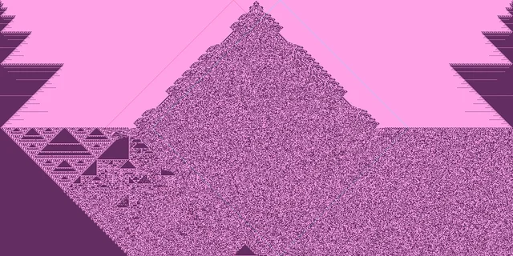
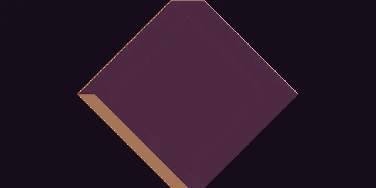
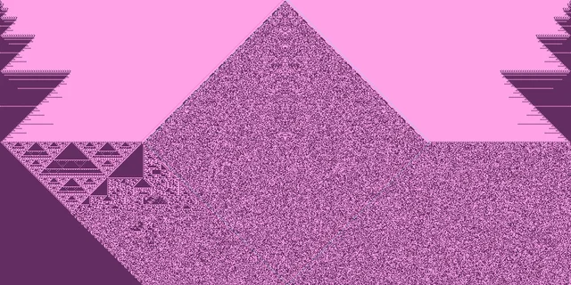
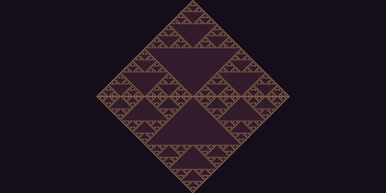
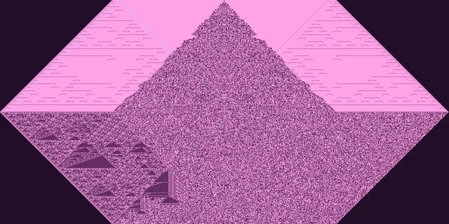
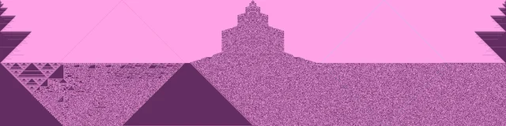
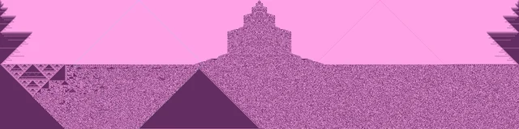

Построение поля


Кадры 1064, 1132, 1428, 1952 · 75 % совпадений по вертикальной оси
Смотреть GIFСкачать GIFИсходный кадр 3952

Кадры 92, 316, 1112, 1444 · 21 % совпадений по вертикальной оси
Смотреть GIFСкачать GIFИсходный кадр 247

Кадры 1068, 1176, 1448, 2056 · 75 % совпадений по вертикальной оси
Смотреть GIFСкачать GIFИсходный кадр 4176

Кадры 116, 364, 1112, 1444 · 17 % совпадений по вертикальной оси
Смотреть GIFСкачать GIFИсходный кадр 295

Кадры 512, 624, 872, 1496 · 81 % совпадений по вертикальной оси
Смотреть GIFСкачать GIFИсходный кадр 3008
Кадры 56, 204, 544, 844 · 57 % совпадений по вертикальной оси
Смотреть GIFСкачать GIFИсходный кадр 1623

Кадры 2088, 2156, 2476, 3032 · 79 % совпадений по вертикальной оси
Смотреть GIFСкачать GIFИсходный кадр 6000
Кадры 92, 316, 2136, 2468 · 21 % совпадений по вертикальной оси
Смотреть GIFСкачать GIFИсходный кадр 247

Кадры 2092, 2200, 2520, 3144 · 79 % совпадений по вертикальной оси
Смотреть GIFСкачать GIFИсходный кадр 6224
Кадры 116, 364, 2136, 2468 · 17 % совпадений по вертикальной оси
Смотреть GIFСкачать GIFИсходный кадр 295
Кадры 512, 624, 872, 1496 · 81 % совпадений по вертикальной оси
Смотреть GIFСкачать GIFИсходный кадр 3008
Кадры 56, 204, 544, 844 · 57 % совпадений по вертикальной оси
Смотреть GIFСкачать GIFИсходный кадр 1623